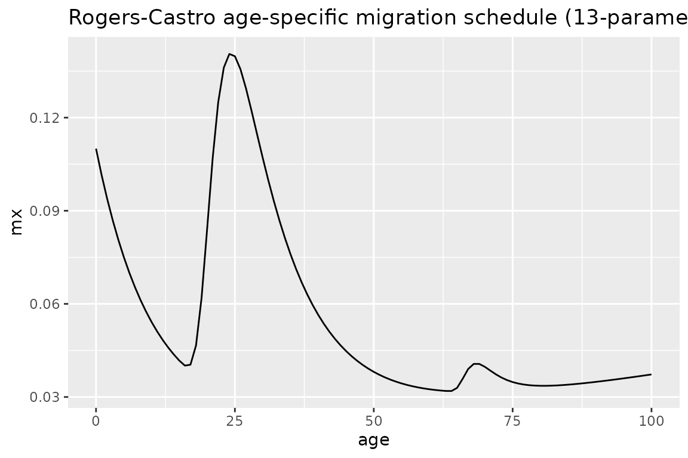
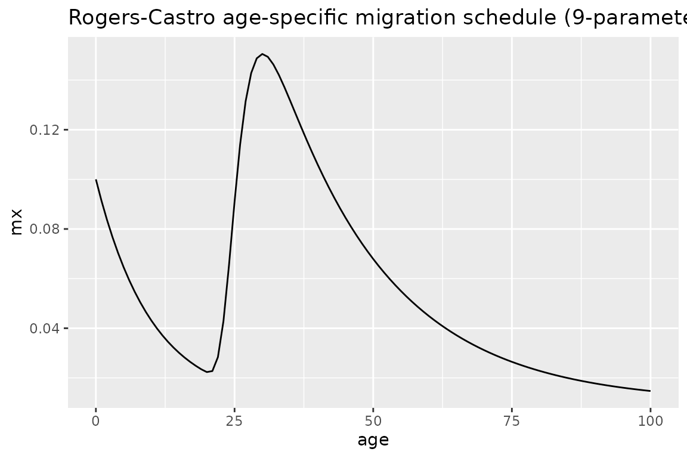
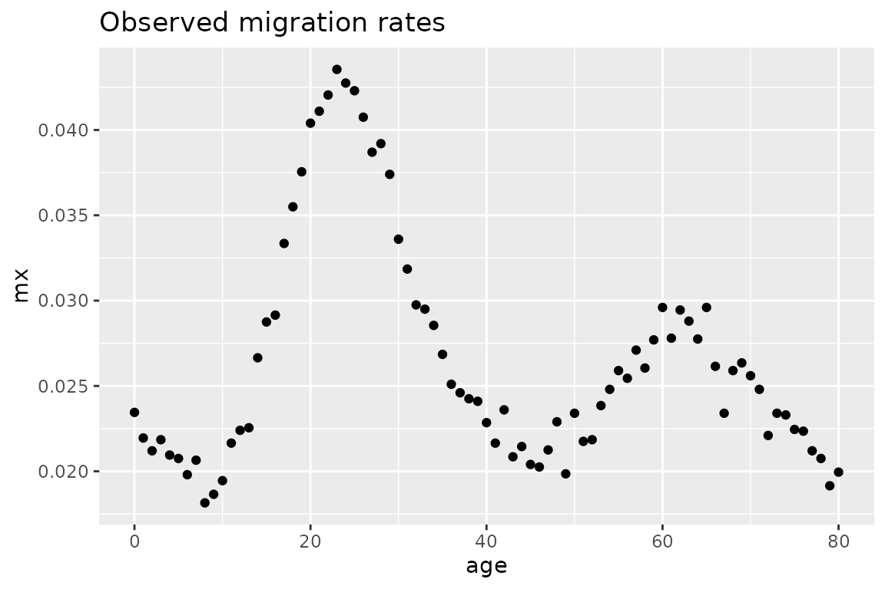
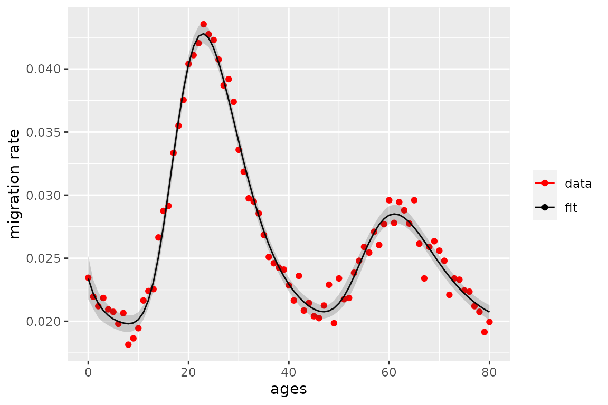

vignettes/migration_with_demotools.Rmd
migration_with_demotools.RmdMigration happens with multiple transitions over the life course such as entry to education, new job or retirement [@preston2000demography]. These transitions happen more frequently at some ages and come in parallel often with migration. Adult migration usually peaks at young adult ages. Around age at retirement there is a second peak. Because of these regularities it is, therefore, possible to model migration by age, which is very important for policy makers and for demographers in estimating population dynamics. Age-specific migration models can help to estimate missing data, smooth noisy data, project trends into the future, and to generalize migration patterns across different populations.
DemoTools has the functionality to fit and estimate age-specific migration schedules based on the Rogers-Castro migration model. This vignette briefly introduces the Rogers-Castro model and then gives examples of both calculating age-specific migration curves given a set of parameters, and fitting the Rogers-Castro model given a set of age-specific migration rates.
@rogers1981model developed a mathematical model of migration with up to 13 parameters. Seven of these parameters explain the shape of migration by age, while the rest of parameters represent the intensity of migration. The original formula for the migration rate at age \(x\) is:
\[\begin{equation*} m(x)= a_1 \exp{[ \alpha_1 x ]} + a_2 \exp{[ -\alpha_2 (x - \mu_2) - \exp{ [ -\lambda_2(x - \mu_2) ]} ]}+ a_3 \exp{[ - \alpha_3(x-\mu_3) - \exp{[-\lambda_3 (x-\mu_3)]} ]} + a_4\exp{[\lambda_4x ]}+ c \end{equation*}\]
The \(c\) parameter describes the baseline level of migration. There are four other distinct parts to the equation, which each describe the shape and intensity of migration at different ages:
For each of the components, the \(a_k\) terms describe the heights of the peaks of migration rates. The \(\alpha_k\) and \(\lambda_k\) parameters describe the shape of each of the components, in terms of the rate of change over age. And \(\mu_2\) and \(\mu_3\) give the ages at the labour force peak and at the retirement peak, respectively.
The migration model need not have all the ‘families’ of migration at different age stages. In practice, there are four combinations of families that are the most common [@rogers2010indirect]:
The migration model-related functions in DemoTools allow for any combination of the components to be included in the model.
DemoTools
DemoTools includes two migration model-related functions: mig_calculate_rc, which returns age-specific migration rates calculated based on an age range and set of parameter inputs, and mig_estimate_rc, which estimates parameter values and age-specific migration rates \(m(x)\) based on an observed age range and migration rates. This section gives examples of both functions.
We can calculate the implied age-specific rates from a set of parameter inputs. Parameters are defined the same way as in the equation above, that is, c is the overall intensity, the a’s are the intensities at each age family, the alphas and lambdas are the rate of decrease and increase of the shape at each age family, and the mus are the age of peak migration for working age and retirement.
The following is an example specifying values for each of the 13 possible parameters, with values calculated for each age up to age 100:
library(DemoTools) library(tibble) library(ggplot2) pars <- c(a1= 0.09, alpha1= 0.1, a2= 0.2, alpha2= 0.1, mu2= 21, lambda2= 0.4, a3= 0.02, alpha3= 0.25, mu3= 67, lambda3= 0.6, a4 = 0.01, lambda4 = 0.01, c= 0.01) ages <- 0:100 mx <- mig_calculate_rc(ages = ages, pars = pars) # plot to see what the schedule looks like df <- tibble(age = ages, mx = mx) df %>% ggplot(aes(age, mx)) + geom_line() + ggtitle("Rogers-Castro age-specific migration schedule (13-parameter)")

Not all parameters need to be specified. The following shows an example of the 9 parameter specification:
pars <- c(a1= 0.09, alpha1= 0.1, a2= 0.2, alpha2= 0.05, mu2= 25, lambda2= 0.4, c= 0.01) ages <- 0:100 mx <- mig_calculate_rc(ages = ages, pars = pars) # plot to see what the schedule looks like df <- tibble(age = ages, mx = mx) df %>% ggplot(aes(age, mx)) + geom_line() + ggtitle("Rogers-Castro age-specific migration schedule (9-parameter)")

Note, however, that all parameters within a particular component family must be specified. So for example, if one of the working-age family parameters is specified (Group 2), then all must be specified, otherwise an error occurs.
The mig_estimate_rc function returns estimated Rogers-Castro parameters and \(m(x)\) values, based on observed age-specific mortality rates, and age range, and the Rogers-Castro components to be included in the model. The function has the capability of estimating a Rogers-Castro age schedule with any combination of the components pre_working_age, working_age, retirement and post_retirement. These are specified as logicals (either TRUE or FALSE) in the function.
As illustrated above, Rogers-Castro migration age schedules are highly non-linear, as so are not necessarily straight forward to estimate. Previous approaches have used, for example, Excel’s Solver function or the optim function in R.1 However, the estimated parameters and schedules are highly sensitive to the initial values chosen for the parameter values, and convergence is difficult to achieve for the 11 and 13 parameter models.
In DemoTools, we estimate Rogers-Castro schedules in a Bayesian framework using a Markov Chain Monte Carlo (MCMC) algorithm, via the Stan programming language [@carpenter2017stan]. The use of Bayesian methods allows for priors to be set on parameters, which helps convergence in the estimation process.
In this example, we will fill an 11-parameter model to a set of observed age-specific rates from a population that resembles Florida in the United States. First, we can plot the observed rates to get a sense of what the age schedule looks like
ages <- 0:80 mx_FL <- c(0.02345, 0.02195, 0.0212, 0.02185, 0.02095, 0.02075, 0.0198, 0.02065, 0.01815, 0.01865, 0.01945, 0.02165, 0.0224, 0.02255, 0.02665, 0.02875, 0.02915, 0.03335, 0.0355, 0.03755, 0.0404, 0.0411, 0.04205, 0.04355, 0.04275, 0.0423, 0.04075, 0.0387, 0.0392, 0.0374, 0.0336, 0.03185, 0.02975, 0.0295, 0.02855, 0.02685, 0.0251, 0.0246, 0.02425, 0.0241, 0.02285, 0.02165, 0.0236, 0.02085, 0.02145, 0.0204, 0.02025, 0.02125, 0.0229, 0.01985, 0.0234, 0.02175, 0.02185, 0.02385, 0.0248, 0.0259, 0.02545, 0.0271, 0.02605, 0.0277, 0.0296, 0.0278, 0.02945, 0.0288, 0.02775, 0.0296, 0.02615, 0.0234, 0.0259, 0.02635, 0.0256, 0.0248, 0.0221, 0.0234, 0.0233, 0.02245, 0.02235, 0.0212, 0.02075, 0.01915, 0.01995) df <- tibble(age = ages, mx = mx_FL) df %>% ggplot(aes(age, mx)) + geom_point() + ggtitle("Observed migration rates")

Let’s fit a Rogers-Castro migration age schedule to these data. Below, we choose to estimate parameters associated with the pre-working age, working and retirement components (but not post retirement).
rc_res <- mig_estimate_rc(ages, mx_FL_sim, pre_working_age = TRUE, working_age = TRUE, retirement = TRUE, post_retirement = FALSE, # (optional) arguments for Stan chains = 4, iter = 2000, control = list(adapt_delta = 0.8, max_treedepth = 10)) #> Running /usr/lib/R/bin/R CMD SHLIB foo.c #> gcc -std=gnu99 -I"/usr/share/R/include" -DNDEBUG -I"/home/tim/R/x86_64-pc-linux-gnu-library/3.6/Rcpp/include/" -I"/home/tim/R/x86_64-pc-linux-gnu-library/3.6/RcppEigen/include/" -I"/home/tim/R/x86_64-pc-linux-gnu-library/3.6/RcppEigen/include/unsupported" -I"/home/tim/R/x86_64-pc-linux-gnu-library/3.6/BH/include" -I"/home/tim/R/x86_64-pc-linux-gnu-library/3.6/StanHeaders/include/src/" -I"/home/tim/R/x86_64-pc-linux-gnu-library/3.6/StanHeaders/include/" -I"/home/tim/R/x86_64-pc-linux-gnu-library/3.6/RcppParallel/include/" -I"/home/tim/R/x86_64-pc-linux-gnu-library/3.6/rstan/include" -DEIGEN_NO_DEBUG -DBOOST_DISABLE_ASSERTS -DBOOST_PENDING_INTEGER_LOG2_HPP -DSTAN_THREADS -DBOOST_NO_AUTO_PTR -include '/home/tim/R/x86_64-pc-linux-gnu-library/3.6/StanHeaders/include/stan/math/prim/mat/fun/Eigen.hpp' -D_REENTRANT -DRCPP_PARALLEL_USE_TBB=1 -fpic -g -O2 -fdebug-prefix-map=/build/r-base-V28x5H/r-base-3.6.3=. -fstack-protector-strong -Wformat -Werror=format-security -Wdate-time -D_FORTIFY_SOURCE=2 -g -c foo.c -o foo.o #> In file included from /home/tim/R/x86_64-pc-linux-gnu-library/3.6/RcppEigen/include/Eigen/Core:88:0, #> from /home/tim/R/x86_64-pc-linux-gnu-library/3.6/RcppEigen/include/Eigen/Dense:1, #> from /home/tim/R/x86_64-pc-linux-gnu-library/3.6/StanHeaders/include/stan/math/prim/mat/fun/Eigen.hpp:13, #> from <command-line>:0: #> /home/tim/R/x86_64-pc-linux-gnu-library/3.6/RcppEigen/include/Eigen/src/Core/util/Macros.h:613:1: error: unknown type name ‘namespace’ #> namespace Eigen { #> ^~~~~~~~~ #> /home/tim/R/x86_64-pc-linux-gnu-library/3.6/RcppEigen/include/Eigen/src/Core/util/Macros.h:613:17: error: expected ‘=’, ‘,’, ‘;’, ‘asm’ or ‘__attribute__’ before ‘{’ token #> namespace Eigen { #> ^ #> In file included from /home/tim/R/x86_64-pc-linux-gnu-library/3.6/RcppEigen/include/Eigen/Dense:1:0, #> from /home/tim/R/x86_64-pc-linux-gnu-library/3.6/StanHeaders/include/stan/math/prim/mat/fun/Eigen.hpp:13, #> from <command-line>:0: #> /home/tim/R/x86_64-pc-linux-gnu-library/3.6/RcppEigen/include/Eigen/Core:96:10: fatal error: complex: No such file or directory #> #include <complex> #> ^~~~~~~~~ #> compilation terminated. #> /usr/lib/R/etc/Makeconf:168: recipe for target 'foo.o' failed #> make: *** [foo.o] Error 1 #> #> SAMPLING FOR MODEL '28c89f5948288d3bb37fc72d345573dc' NOW (CHAIN 1). #> Chain 1: #> Chain 1: Gradient evaluation took 7e-05 seconds #> Chain 1: 1000 transitions using 10 leapfrog steps per transition would take 0.7 seconds. #> Chain 1: Adjust your expectations accordingly! #> Chain 1: #> Chain 1: #> Chain 1: Iteration: 1 / 2000 [ 0%] (Warmup) #> Chain 1: Iteration: 200 / 2000 [ 10%] (Warmup) #> Chain 1: Iteration: 400 / 2000 [ 20%] (Warmup) #> Chain 1: Iteration: 600 / 2000 [ 30%] (Warmup) #> Chain 1: Iteration: 800 / 2000 [ 40%] (Warmup) #> Chain 1: Iteration: 1000 / 2000 [ 50%] (Warmup) #> Chain 1: Iteration: 1001 / 2000 [ 50%] (Sampling) #> Chain 1: Iteration: 1200 / 2000 [ 60%] (Sampling) #> Chain 1: Iteration: 1400 / 2000 [ 70%] (Sampling) #> Chain 1: Iteration: 1600 / 2000 [ 80%] (Sampling) #> Chain 1: Iteration: 1800 / 2000 [ 90%] (Sampling) #> Chain 1: Iteration: 2000 / 2000 [100%] (Sampling) #> Chain 1: #> Chain 1: Elapsed Time: 2.00907 seconds (Warm-up) #> Chain 1: 1.81699 seconds (Sampling) #> Chain 1: 3.82606 seconds (Total) #> Chain 1: #> #> SAMPLING FOR MODEL '28c89f5948288d3bb37fc72d345573dc' NOW (CHAIN 2). #> Chain 2: #> Chain 2: Gradient evaluation took 3.2e-05 seconds #> Chain 2: 1000 transitions using 10 leapfrog steps per transition would take 0.32 seconds. #> Chain 2: Adjust your expectations accordingly! #> Chain 2: #> Chain 2: #> Chain 2: Iteration: 1 / 2000 [ 0%] (Warmup) #> Chain 2: Iteration: 200 / 2000 [ 10%] (Warmup) #> Chain 2: Iteration: 400 / 2000 [ 20%] (Warmup) #> Chain 2: Iteration: 600 / 2000 [ 30%] (Warmup) #> Chain 2: Iteration: 800 / 2000 [ 40%] (Warmup) #> Chain 2: Iteration: 1000 / 2000 [ 50%] (Warmup) #> Chain 2: Iteration: 1001 / 2000 [ 50%] (Sampling) #> Chain 2: Iteration: 1200 / 2000 [ 60%] (Sampling) #> Chain 2: Iteration: 1400 / 2000 [ 70%] (Sampling) #> Chain 2: Iteration: 1600 / 2000 [ 80%] (Sampling) #> Chain 2: Iteration: 1800 / 2000 [ 90%] (Sampling) #> Chain 2: Iteration: 2000 / 2000 [100%] (Sampling) #> Chain 2: #> Chain 2: Elapsed Time: 2.18199 seconds (Warm-up) #> Chain 2: 1.4165 seconds (Sampling) #> Chain 2: 3.5985 seconds (Total) #> Chain 2: #> #> SAMPLING FOR MODEL '28c89f5948288d3bb37fc72d345573dc' NOW (CHAIN 3). #> Chain 3: #> Chain 3: Gradient evaluation took 3.9e-05 seconds #> Chain 3: 1000 transitions using 10 leapfrog steps per transition would take 0.39 seconds. #> Chain 3: Adjust your expectations accordingly! #> Chain 3: #> Chain 3: #> Chain 3: Iteration: 1 / 2000 [ 0%] (Warmup) #> Chain 3: Iteration: 200 / 2000 [ 10%] (Warmup) #> Chain 3: Iteration: 400 / 2000 [ 20%] (Warmup) #> Chain 3: Iteration: 600 / 2000 [ 30%] (Warmup) #> Chain 3: Iteration: 800 / 2000 [ 40%] (Warmup) #> Chain 3: Iteration: 1000 / 2000 [ 50%] (Warmup) #> Chain 3: Iteration: 1001 / 2000 [ 50%] (Sampling) #> Chain 3: Iteration: 1200 / 2000 [ 60%] (Sampling) #> Chain 3: Iteration: 1400 / 2000 [ 70%] (Sampling) #> Chain 3: Iteration: 1600 / 2000 [ 80%] (Sampling) #> Chain 3: Iteration: 1800 / 2000 [ 90%] (Sampling) #> Chain 3: Iteration: 2000 / 2000 [100%] (Sampling) #> Chain 3: #> Chain 3: Elapsed Time: 1.96171 seconds (Warm-up) #> Chain 3: 1.84205 seconds (Sampling) #> Chain 3: 3.80375 seconds (Total) #> Chain 3: #> #> SAMPLING FOR MODEL '28c89f5948288d3bb37fc72d345573dc' NOW (CHAIN 4). #> Chain 4: #> Chain 4: Gradient evaluation took 3.7e-05 seconds #> Chain 4: 1000 transitions using 10 leapfrog steps per transition would take 0.37 seconds. #> Chain 4: Adjust your expectations accordingly! #> Chain 4: #> Chain 4: #> Chain 4: Iteration: 1 / 2000 [ 0%] (Warmup) #> Chain 4: Iteration: 200 / 2000 [ 10%] (Warmup) #> Chain 4: Iteration: 400 / 2000 [ 20%] (Warmup) #> Chain 4: Iteration: 600 / 2000 [ 30%] (Warmup) #> Chain 4: Iteration: 800 / 2000 [ 40%] (Warmup) #> Chain 4: Iteration: 1000 / 2000 [ 50%] (Warmup) #> Chain 4: Iteration: 1001 / 2000 [ 50%] (Sampling) #> Chain 4: Iteration: 1200 / 2000 [ 60%] (Sampling) #> Chain 4: Iteration: 1400 / 2000 [ 70%] (Sampling) #> Chain 4: Iteration: 1600 / 2000 [ 80%] (Sampling) #> Chain 4: Iteration: 1800 / 2000 [ 90%] (Sampling) #> Chain 4: Iteration: 2000 / 2000 [100%] (Sampling) #> Chain 4: #> Chain 4: Elapsed Time: 2.29175 seconds (Warm-up) #> Chain 4: 1.54036 seconds (Sampling) #> Chain 4: 3.83211 seconds (Total) #> Chain 4:
The mig_estimate_rc function also allows for addition arguments that are related to the Stan model. In the example above, the values listed for chains, iter, adapt_delta and max_treedepth are the default values, so need have not been specified. However, depending on the context, it may make sense to increase the value of each of these components to ensure convergence. More details about these arguments can be found in the R help files for rstan::stan, and also by referring to the Stan documentation.
The resulting rc_res object is shown below. The pars_df shows the median estimate and lower and upper bound of a 95% credible interval for the Rogers-Castro parameters. In this example, the working age peak was estimated to be at 25.3 years (95% CI: [23.5, 27.2]).
The fit_df object in rc_res shows the data and estimated median \(m(x)\) values at each age \(x\), along with the lower and upper bound of the 95% credible interval of the fits, and the squared difference between data and the median estimate.
rc_res #> $pars_df #> # A tibble: 11 x 4 #> variable median lower upper #> <chr> <dbl> <dbl> <dbl> #> 1 variable 0.00417 0.00222 0.00624 #> 2 variable 0.0598 0.0527 0.0658 #> 3 variable 0.0220 0.0178 0.0265 #> 4 variable 0.308 0.114 1.09 #> 5 variable 0.181 0.156 0.204 #> 6 variable 0.169 0.135 0.208 #> 7 variable 0.0193 0.0177 0.0202 #> 8 variable 0.130 0.119 0.145 #> 9 variable 0.110 0.0936 0.129 #> 10 variable 25.4 23.6 27.1 #> 11 variable 65.1 63.1 67.0 #> #> $fit_df #> # A tibble: 81 x 6 #> age data median lower upper diff_sq #> <int> <dbl> <dbl> <dbl> <dbl> <dbl> #> 1 0 0.0234 0.0234 0.0217 0.0252 0.00000000428 #> 2 1 0.0220 0.0222 0.0210 0.0233 0.0000000624 #> 3 2 0.0212 0.0214 0.0203 0.0223 0.0000000479 #> 4 3 0.0218 0.0209 0.0199 0.0217 0.000000972 #> 5 4 0.0210 0.0205 0.0197 0.0213 0.000000235 #> 6 5 0.0208 0.0202 0.0195 0.0209 0.000000323 #> 7 6 0.0198 0.0200 0.0193 0.0207 0.0000000352 #> 8 7 0.0207 0.0199 0.0192 0.0205 0.000000622 #> 9 8 0.0182 0.0198 0.0191 0.0205 0.00000274 #> 10 9 0.0186 0.0199 0.0192 0.0205 0.00000149 #> # … with 71 more rows
We can plot the observed data and estimated fit using the fit_df object:
rc_res[["fit_df"]] %>% ggplot(aes(ages, data)) + geom_point(aes(color = "data")) + geom_line(aes(x = age, y = median, color = "fit")) + geom_ribbon(aes(ymin = lower, ymax = upper), alpha = 0.2) + scale_color_manual(name = "", values = c(data = "red", fit = "black")) + ylab("migration rate")

Comments about warnings
When running
mc_estimate_rcit is common to see warnings from Stan, particularly when the retirement and post-retirement families are included in the model. Warnings about divergent transitions, low ESS and maximum treedepth can often be eliminated by changing the Stan settings to have a largeradapt_delta,iterandmaximum_treedepth, respectively. If warnings persist it is not the end of the world; the results are probably still fine. The warnings are largely a consequence of the complexity of the function being fitted and the strong correlations that exist between estimates of different parameters. Work is still on going investigating different prior set-ups to improve the efficiency of fit.